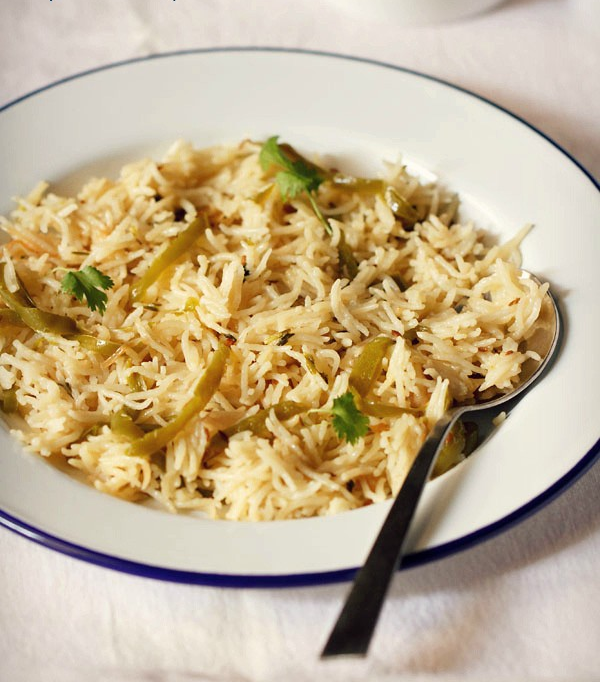

Capsicum Rice

For those who like Capsicum or Bell Pepper, here’s an aromatic and flavorful pulao
made with green bell peppers, spices and rice. This is a mildly spiced and light pulao
and thus goes well with kids or folks who do not prefer spicy food. It can also be
packed in the tiffin box with a side of dal or a gravy dish or chutney.
There are not many ingredients used in the recipe and thus this capsicum rice pairs
nicely with a side of a vegetable or paneer curry, lentils or even a simple onion-tomato
raita. If you like you can make this capsicum spicy by adding ginger-garlic paste, green
chillies and red chilli powder.
Ingredients
- Basmati rice
- Onion
- Capsicums
- 1 teaspoon cumin seeds
- 2 green cardamoms
- 2 cloves
- 1 inch cinnamon
- 2 small tej patta (or 1 medium to large tej patta)
- 2 single strands of mace
Steps
- Rinse 1 cup basmati rice very well in water.
Then soak rice in water for 20 to 30 minutes.
Later drain all the water and keep the rice aside.
- Meanwhile when the rice is soaking, slice 1 medium
onion thinly (about ½ cup thinly sliced onions).
Also slice 2 medium-sized capsicums or green bell peppers
(about ¾ to 1 cup sliced capsicum). Set the sliced veggies aside.
-
Heat 2 tablespoons oil in a 2 litre pressure cooker. Add the whole spices listed below:
- 1 teaspoon cumin seeds
- 2 green cardamoms
- 2 cloves
- 1 inch cinnamon
- 2 small tej patta (or 1 medium to large tej patta)
- 2 single strands of mace
Fry on low heat for some seconds till the spices crackle and become fragrant.
-
Then add the thinly sliced onions.
-
Mix very well.
-
Sauté stirring often on medium-low heat till the onions become golden or caramelize.
Take care not to burn them. Onions take more time to caramelize. To make them cook
faster add a pinch of salt while caramelizing them.
-
Lower the heat and add the sliced capsicum.
-
Add 3 tablespoons chopped coriander leaves.
-
Stir and mix to combine with the caramelized onions.
-
Sauté on a low to medium-low heat for 3 to 4 minutes.
-
Add the soaked rice and salt as required.
-
Mix the rice grains gently with the rest of the ingredients. Sauté rice for a minute.
-
Pour 1.75 cups water. Also, squeeze in 4 to 5 drops of lemon juice. Stir again.
-
Cover the pressure cooker with its lid and pressure cook capsicum rice on a medium to
medium-high heat for 2 to 3 whistles.
-
Serve capsicum rice garnished with some coriander leaves (cilantro) with a side of a
Vegetable Curry or Dal (Lentils) or Raita. Here I served the bell pepper rice with
mushroom masala.